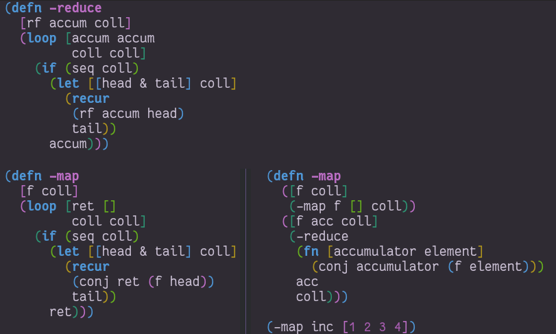
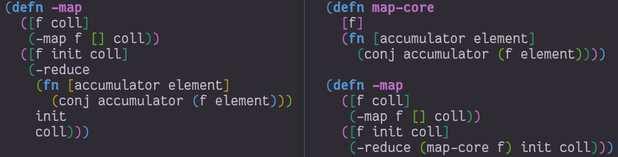
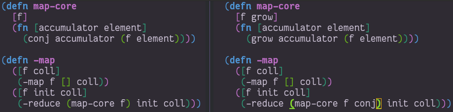
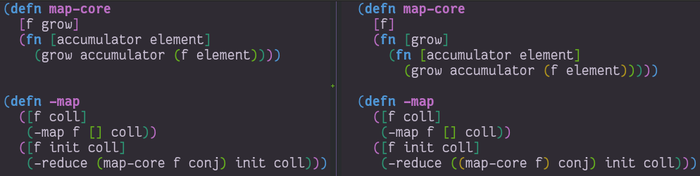
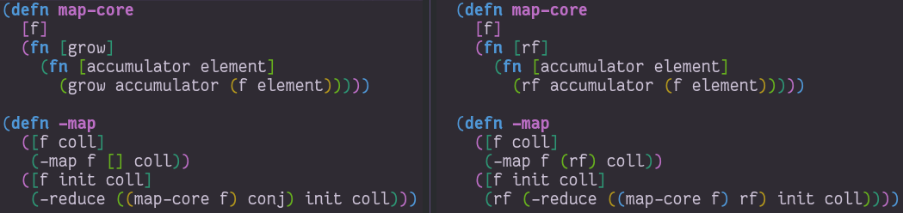
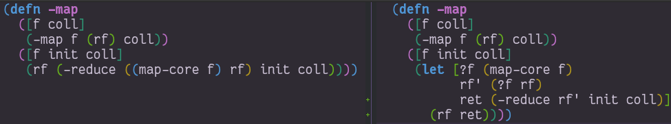
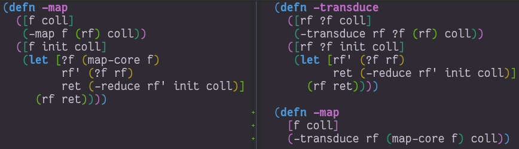

Created: 2021-11-12 Fri 18:40
map and filter over everything?Lazy vs. Eager
reduce is
implemented.Reduce takes three arguments (putting aside the two arguments case):
accumulator -> element -> accumulatorIterating over the elements of the collection:
(defn -reduce
[rf accum coll]
;; if we have not consumed the entire collection
(if (seq coll)
;; separate the head of the collection from the rest of it
(let [[head & tail] coll
;; combine the accumulator with the head element
;; with our function
accum (rf accum head)]
;; recur with the updated `accum` and the
;; rest of the collection
(recur rf accum tail))
accum)) ;; otherwise, return the accumulator
(defn -reduce
[rf accum coll]
(if (seq coll)
(let [[head & tail] coll]
(recur
rf
(rf accum head)
tail))
accum))
(-reduce + 0 [1 2 3 4])
10
(-reduce conj [] [1 2 3 4])
[1 2 3 4]
(-reduce conj () [1 2 3 4])
(4 3 2 1)
This implementation has a deep significance:
Since we can implement reduce with linear recursion (loop), this relationship is bi-directional.
Everything which can be implemented with one, can also be implemented with the other.
Can you poke holes in this assumption?
(defn -reduce
[rf accum coll]
(if (seq coll)
(let [[head & tail] coll
result (rf accum head)]
(if (reduced? result)
result
(recur rf result tail)))
accum))
Let's now take a side trip to implement map and filter from scratch.
We aren't looking for efficiency, just a correct implementation:
(defn -map
[f coll]
(loop [ret []]
(if (seq coll)
(let [[head & tail] coll]
(recur
(conj ret (f head))
tail))
ret)))
(-map inc [1 2 3 4])
[2 3 4 5]
Since loop and reduce are equivalent, we can rewrite our map with reduce:
(defn -map
([f coll]
(-map f [] coll))
([f acc coll]
(-reduce
(fn [accumulator element]
(conj accumulator (f element)))
acc
coll)))
(-map inc [1 2 3 4])
[2 3 4 5]
What is rf? (conj accumulator (f element))

The same can be done with filter:
(defn -filter
[pred coll]
(loop [ret []
coll (seq coll)]
(if coll
(let [[head & tail] coll
accum (if (pred head) (conj ret head) ret)]
(recur accum
tail))
ret)))
(-filter even? [1 2 3 4])
[2 4]
(defn -filter
([pred coll]
(-filter pred [] coll))
([pred acc coll]
(-reduce
(fn [accumulator element]
(if (pred element)
(conj accumulator element)
accumulator))
acc
coll)))
(-filter even? [1 2 3 4])
[2 4]
There is an important property to reducing processes, recursions and loops, which is a sort of invariance:
there is always one quantity which decreases and one which grows.
The process ends when the decreasing quantity reaches a "zero" value
It returns the accumulated value we have grown instead.
In reduce it is quite evident:
coll decreasesacc increases.These can be numbers or collections, the principle remains the same.
With both map and reduce, we have also seen:
This invariant is what will allow us to derive transducers.
You might have noticed the map and filter implementations with reduce look very familiar. They are actually the same besides a common core:
(defn map-core
[f]
(fn [accumulator element]
(conj accumulator (f element))))
(defn -map
([f coll]
(-map f [] coll))
([f acc coll]
(-reduce (map-core f) acc coll)))
(-map inc [1 2 3 4])
[2 3 4 5]

(defn filter-core
[pred]
(fn [accumulator element]
(if (pred element)
(conj accumulator element)
accumulator)))
(defn -filter
([pred coll]
(-filter pred [] coll))
([pred acc coll]
(-reduce (filter-core pred) acc coll)))
(-filter even? [1 2 3 4])
[2 4]
Now we have reached at something interesting. The *-core functions we have
extracted are completely agnostic of the notion of taking element out of the
source collection.
We have factored out the process of "consuming" elements completely.
Still in our implementation, we have the accumulating function. Can we factor it out? Let's see what happens:
(defn map-core
[f grow]
(fn [accumulator element]
(grow accumulator (f element))))
(defn -map
([f coll]
(-map f [] coll))
([f acc coll]
(-reduce (map-core f conj) acc coll)))
(-map inc [1 2 3 4])
[2 3 4 5]

But that's actually a less interesting way of writing it. We can instead return a closure:
(defn map-core
[f]
(fn [grow]
(fn [accumulator element]
(grow accumulator (f element)))))
(defn -map
([f coll]
(-map f [] coll))
([f acc coll]
(-reduce ((map-core f) conj) acc coll)))
(-map inc [1 2 3 4])
[2 3 4 5]

Similarly for filter:
(defn filter-core
[pred]
(fn [grow]
(fn [accumulator element]
(if (pred element)
(grow accumulator element)
accumulator))))
(defn -filter
([pred coll]
(-filter pred [] coll))
([pred acc coll]
(-reduce ((filter-core pred) conj) acc coll)))
(-filter even? [1 2 3 4])
[2 4]
"Okay", you might say, "this is interesting". But is it useful?
In our small refactoring process we derived two higher order functions.
While maintaining the reducing process invariant, they are completely independent of its implementation.
On the contrary, they are parametrized on it.
The consume / pull part of the implementation is handled by reduce.
The accumulation / push part is now a parameter, which is a function, grow.
(defn map-core
[f]
(fn [grow]
(fn [accumulator element]
(grow accumulator (f element)))))
(defn filter-core
[pred]
(fn [grow]
(fn [accumulator element]
(if (pred element)
(grow accumulator element)
accumulator))))
What properties should grow have?
Such a function, which can be used by reduce, is called a reducing function,
and is usually abbreviated as rf in arguments.
grow is still a function which takes an accumulator and an element, and
returns an "updated" accumulator.
It is useful when working with reducers to have a way to signal "beginning" and "end" of the reducing process.
In the beginning, we can create the initial value into which we will accumulate
(thus the 2-arity of reduce is handled).
In the end, we sometimes want to "finalize" our accumulator.
For example, we might be using transient collections as an optimization, and in
the end we want to call persistent!.
Therefor, the full signature of a reducing function will be:
(defn rf
([] initial-value)
([accum] (finalize accum))
([accum elem] (combine accum elem)))
(defn rf
([] (transient []))
([v] (persistent! v))
([v x] (conj! v x)))
(defn map-core
[f]
(fn [rf]
(fn [accumulator element]
(rf accumulator (f element)))))
(defn -map
([f coll]
(-map f (rf) coll))
([f acc coll]
(rf (-reduce ((map-core f) rf) acc coll))))
(-map inc [1 2 3 4 5 6 7 8])
[2 3 4 5 6 7 8 9]

A very important point to now is that after closing over f or pred,
map-core and filter-core respectively return functions which take a reducing
function and return a reducing function.
It turns out this pattern is so useful it deserves a function of its own, centered around reduce. Let's invoke the spirit of Tim Allen and move some stuff around the house first:
(defn -map
([f coll]
(-map f (rf) coll))
([f acc coll]
(let [?f (map-core f)
rf' (?f rf)
ret (-reduce rf' acc coll)]
(rf ret))))

Now the process almost jumps out at us:
(defn -transduce
([rf ?f coll]
(-transduce rf ?f (rf) coll))
([rf ?f acc coll]
(let [rf' (?f rf)
ret (-reduce rf' acc coll)]
(rf ret))))
(defn -map
[f coll]
(-transduce rf (map-core f) coll))
(-map inc [1 2 3 4 5 6 7 8])
[2 3 4 5 6 7 8 9]

clojre.core/transduce[xform f init coll]
Hopefully, everything about what we did is clear besides ?f. What is it? what
does it do?
Like we mentioned in the end of the previous section, ?f takes a reducing
function rf and returns another valid reducing function.
In other words, it transforms a reducing function, by wrapping it. In Clojure, such functions are called transducers as they transform reducers.
Conventionally, transducers are labeled xf or xform.
What are the implications of having a function which transforms a reducing function?
xf :: rf -> rf'
These transformations compose!
xf :: rf -> rf' xf' :: rf' -> rf'' xf o xf' :: rf -> rf''
The order of transformation matters, and the last transformation will be the first applied, i.e.
(comp
(map inc)
(filter even?))
Remember this transducer is applied to a reducing function. By way of substitution:
((comp
(map inc)
(filter even?))
rf)
;; comp
((map inc)
((filter even?)
rf))
((map inc)
((filter even?)
rf))
((map inc)
((fn [rf']
(fn [acc x]
(if (even? x)
(rf acc x)
x))) rf))
((map inc)
((fn [rf']
(fn [acc x]
(if (even? x)
(rf acc x)
x))) rf))
((map inc)
(fn [acc x]
(if (even? x)
(rf acc x)
x)))
((map inc)
(fn [acc x]
(if (even? x)
(rf acc x)
x)))
((fn [rf]
(fn [acc x]
(rf acc (inc x))))
(fn [acc x]
(if (even? x)
(rf acc x)
x)))
((fn [rf]
(fn [acc x]
(rf acc (inc x))))
(fn [acc x]
(if (even? x)
(rf acc x)
x)))
(fn [acc x]
((fn [acc x]
(if (even? x)
(rf acc x)
x))
acc
(inc x)))
(fn [acc x]
((fn [acc x]
(if (even? x)
(rf acc x)
x))
acc
(inc x)))
(fn [acc x]
(let [inner (fn [acc x]
(if (even? x)
(rf acc x)
x))]
(inner acc (inc x))))
inner (i.e. even?) is called after inc
For each x, notice how it will first be mapped on before even passing to
the inner rf which will check even?
It might be confusing at first, but transducers apply in an opposite
order to comp.
Their application more closely resembles:
(->> xs
(map inc)
(filter even?))
Each transducer is a transformation which returns a function wrapping a reducing function
Every value which passes through the resulting function will pass through the wrapping layers one by one.
The last wrap is the one a value will pass through first.
Transducers give us composable transformation pipeline elements.
Transducers abstract away the source of inputs and accumulation of results. What's left is a distillation of computational process.
Now that we have extracted the concept of mapping, we can apply it to anything which is reducible.
As reduce is defined with protocols, we can extend this application to many things.
Channels and sequences have a lot in common. But channels aren't sequences. By implementing reduce, however, we can gain all the semantics of transducers with channels "for free":
(async/reduce f init ch)
(async/transduce xform f init ch)
(async/chan n xf)
Even putting on a channel is a reducing function, thus, channels' behavior as accumulators can be tweaked.
Then, an equivalent to into with a transducer will be
(async/onto-chan! ch coll)
Where ch has an attached transducer.
In cases where our transducers are stateless, calculations over sequence elements could be performed concurrently:
(async/pipeline to n xf from)
Can we apply it to other things?
(import 'java.util.concurrent.CompletableFuture)
(import 'java.util.function.Function)
(defn then
([^CompletableFuture cf f]
(.thenApply cf (reify Function (apply [_ x] (f x)))))
([^CompletableFuture cf f v]
(.thenApply cf (reify Function (apply [_ x] (f v x))))))
(.get (then (CompletableFuture/completedFuture 1) inc))
;; => 2
(require 'clojure.core.protocols)
(extend-protocol clojure.core.protocols/CollReduce
CompletableFuture
(coll-reduce
([cf f val] (then cf f val))))
(defn step
([] nil)
([^CompletableFuture x] (.get x))
([_ x] x))
(transduce
(comp
(map inc)
(map #(* % %)))
step
(CompletableFuture/completedFuture 1))
;; => 4
We've yet to scratch the surface of the possibilities.
Another use case in transducers is keeping state between iterations.
While with loops we could just add another binding, with transducers we often have to close over a mutable value.
Let's try to implement map-indexed.
We know it should be similar to map, but an index should be laying around, somewhere:
Clojure doesn't have mutable state, but it does have managed reference types.
We can use volatile to create a reference with volatile semantics
which can be mutated using vswap!.
(def v (volatile! 0))
@v ;; => 0
(vswap! v inc) ;; => 1
@v ;; => 1
A little helper, because we'll want the previous value:
(defmacro vswap-val!
"Like vswap! but returns the old value."
[v & args]
`(let [old# @~v]
(vswap! ~v ~@args)
old#))
(defn -map-indexd
[f]
(fn [rf]
(let [i (volatile! 0)]
(fn
([] (rf))
([acc] (rf acc))
([acc x]
(rf acc (f (vswap-val! i inc) x)))))))
(sequence (-map-indexd vector) [:a :b :c])
([0 :a] [1 :b] [2 :c])
Mutable counter, implements invoke, which mutates the member i
(deftype Counter [^int ^:unsynchronized-mutable i]
clojure.lang.IFn
(invoke [_]
(let [i' i]
(set! i (unchecked-inc-int i))
i')))
(def c (Counter. 0))
(.i c) ;; => 0
(c) ;; => 0 returns previous value, increments counter
(.i c) ;; => 1
(defn -map-indexd
[f]
(fn [rf]
(let [i (Counter. 0)]
(fn
([] (rf))
([acc] (rf acc))
([acc x]
(rf acc (f (i) x)))))))
(sequence (-map-indexd vector) [:a :b :c])
([0 :a] [1 :b] [2 :c])
Other types of state can also be maintained.
For example, holding references to multiple elements, which lets us implement operations like windowing.
Let's reach for a Queue implementation which has the methods add, remove, size
(defn sliding
([^long n] (sliding n 1))
([^long n ^long step]
(fn [rf]
(let [a (java.util.ArrayDeque. n)] ; Queue instance
(fn ([] (rf))
([result] (rf result)) ; don't need leftovers
([result input]
(.add a input)
(if (= n (.size a))
(let [v (vec (.toArray a))] ;copies the collection
;; Remove `step` elements safely, v is a copy
(dotimes [_ step] (.removeFirst a))
(rf result v))
result)))))))
(sequence (sliding 3) (range 10))
([0 1 2] [1 2 3] [2 3 4] [3 4 5] [4 5 6] [5 6 7] [6 7 8] [7 8 9])
Like we have derived previously, transduce is a general API which
decomplects processing (the transducer) from accumulation.
Iteration is handled by the reduce API.
Slightly less generic than transduce, will either conj or conj! into
the provided "sink" collection.
(into to xf from)
Into just reduces with conj using from as the collection and to as
the initial value.
If a transducer is supplied, it wraps conj.
map of transducersTakes a transducer and a collection,
Returns a lazy sequence of the transducer applied to the elements.
It can also take multiple inputs like map, applying the transducer to
the combined items from each coll, i.e. the first from all, then the
second from all, etc.
The peek of laziness is not doing anything at all.
Returns a reducible/iterable application of the transducer to a reducible.
sequence returns a lazy sequence,Eduction is a promise of a reduction.Implements the reduce interface but doesn't do anything until you reduce over it.
These applications will be performed every time reduce/iterator is called.
Pros: They compose arbitrarily with very little overhead
Cons: Results are not cached, be careful not to reduce over an eduction twice, unless you want to.
Lets set up a hypothetical example of plenty of nested sequences (they happen)
(def xs [[1 2 3] [4 5 6] [7 8 9]])
(def ys '[[a b c] [x y z] [u v w]])
(def zs (mapv (partial mapv keyword) '[[a b c] [x y z] [u v w]]))
Had we wanted to concat them all, we might have written something like:
(concat
(apply concat xs)
(apply concat ys)
(apply concat zs))
(1 2 3 4 5 6 7 8 9 a b c x y z u v w :a :b :c :x :y :z :u :v :w)
cat vs. concat
cat is the transducing version of concat.
Where we'd write
(concat [1 2 3] [4 5 6]) ;; => (1 2 3 4 5 6)
We can write
(sequence cat [[1 2 3] [4 5 6]]) ;; => (1 2 3 4 5 6)
(->Eduction cat [[1 2 3] [4 5 6]]) ;; => (1 2 3 4 5 6)
Notice the need to pack the sequences in a wrapping sequence.
On the other hand, no more need to write (apply concat ,,,)
cat vs. concatWith eduction:
(defn caduction [xs] (->Eduction cat xs))
(caduction
[(caduction xs)
(caduction ys)
(caduction zs)])
(1 2 3 4 5 6 7 8 9 a b c x y z u v w :a :b :c :x :y :z :u :v :w)
cat vs. concatThere are certainly performance benefits:
(time
(dotimes [_ 1e6]
(count
(concat
(apply concat xs)
(apply concat ys)
(apply concat zs)))))
"Elapsed time: 2214.169337 msecs"
cat vs. concat(def incr (fn [^long x _] (unchecked-inc x)))
;; Eduction isn't even countable so we need to count it ourselves
(defn -count
[xs]
(reduce incr 0 xs))
(time
(dotimes [_ 1e6]
(-count
(caduction
[(caduction xs)
(caduction ys)
(caduction zs)]))))
"Elapsed time: 402.897992 msecs"
Transducers give a significant performance boost in comparison to chained sequence operations, mainly due to two reasons
sequence operations (map, filter) will produce intermediary lazy sequences.
If the input is chunked, the output will be chunked, too.
Assuming chunked inputs, every step will allocate an array holding 32 lazy values.
(->> xs (map f) (map g) (map h))
sequence will produce only one chunked lazy sequence which encompasses the
entire computation
(sequence (comp (map f) (map g) (map h)) xs)
Eduction will produce a single allocation, and may only allocate as little as one element at a time
(->Eduction (comp (map f) (map g) (map h)) xs)
transduce will allocate depending on rf's behavior and init.
(transduce (comp (map f) (map g) (map h)) rf init xs)
In any use case, using transducers will reduce allocation pressure.
Moreover, the different APIs provide us with a choice on regarding laziness which affects the allocation profile.
The JVM is a bytecode interpreter with a very clever Just In Time compiler.
One of the things it is very good at optimizing is nested class method calls.
Functions in Clojure are all class instances, calling them calls a method they all implement.
Just like this:
(map #(-> % f g h) xs)
Will be faster than:
(->> xs (map f) (map g) (map h))
(putting aside the intermediary lazy sequences)
So will
(sequence (comp (map f) (map g) (map h)) xs)
Will be faster than:
(->> xs (map f) (map g) (map h))
And with transducers, we can also compose various sequence operations:
(->> xs
(map f)
(filter g)
(partition-all 3)
(map h)
(filter p))
;; =>
(def xf (comp (map f)
(filter g)
(partition-all 3)
(map h)
(filter p)))
In both cases, we can and should def the composed function, so it will
only be compiled to bytecode once, and over successive calls will be
optimized by the JIT compiler, rather than creating new instances every
call.
(def xf (comp (map f) (map g) (map h)))